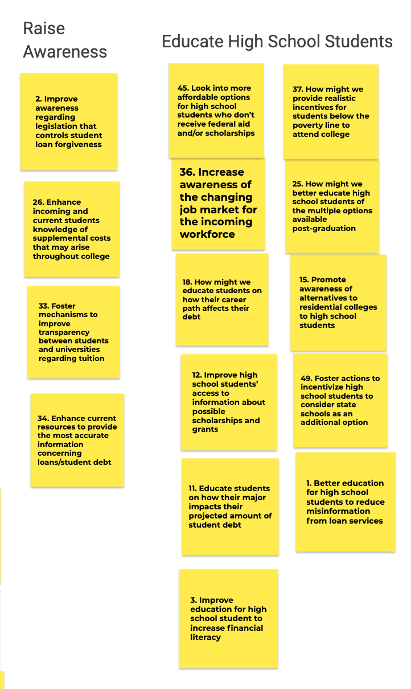
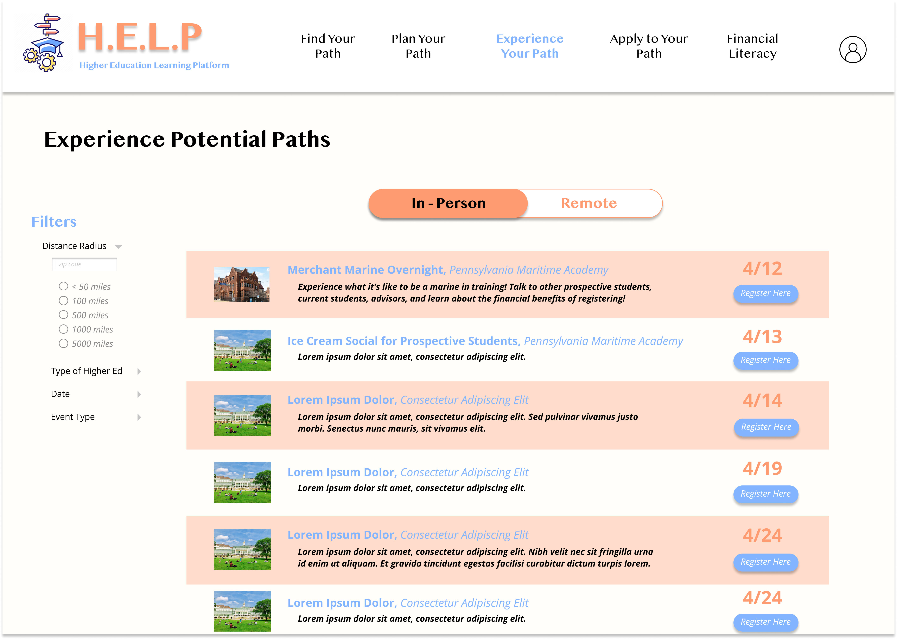

H.E.L.P

Ideation / UI/UX Design + Research
DURATION: January - May 2021
CONTEXT: 49-300: Integrated Product Conceptualization
Last Spring, I took a course called Integrated Product Conceptualization where we were divided into teams and went through the first three phases of the integrated new product development (iNPD) process: 1) identifying opportunities for a new product or service; 2) understanding one opportunity through stakeholder research, value opportunity analysis, and competitive landscape assessment; and 3) conceptualizing the opportunity with the goal of meeting the value proposition. The challenge we focused on for this course was student loans, so our initial problem statement was: How can we clarify the conversation and innovate for student debt?
Methods
PESTLE Factors
Product Opportunity Gaps
Affinity Diagramming
Opportunity Decision Matrix Analysis
Stakeholder Analysis Map
Semi-structured Interviews
Customer Journey Map
Value Opportunity Analysis
Persona Crafting
Pugh Chart
Reverse Assumptions
Crazy 8s
Wireframing
Tools
Figma
LucidChart
Google Jamboard
PESTLE Factors + POG Affinity Diagramming
In order to identify our Product Opportunity Gap and ultimate Problem Statement, we had to first identify the PESTLE (Political, Economic, Social, Technological, Legal, and Environmental) factors influencing our problem space of student debt. Our research led us to find 50 PESTLE factors, which we then categorized based on priority in the domain. From there we identified 50 Product Opportunity Gaps (POGs) that we then affinity diagrammed by categories redolent of our PESTLE factors.

From there, we consolidated the POGs in each group into superPOGs.
Then we conducted a weighted analysis of our 10 superPOGs using multiple rounds of an Opportunity Decision Matrix. For this matrix we relied on 6 different criterion which we attributed varying weights.
| Criteria | Weight | 1 | 2 | 3 | 4 | 5 | 6 | 7 | 8 | 9 | 10 |
|---|---|---|---|---|---|---|---|---|---|---|---|
| Project Feasibility | 5 | 2 | 4 | 2 | 1 | 3.5 | 3 | 3 | 3 | 2 | 5 |
| Profitability | 4.5 | 2 | 4 | 5 | 5 | 3 | 4 | 3 | 2 | 4 | 3.5 |
| Team Interest | 4 | 3 | 2 | 4 | 4 | 4 | 3.5 | 3.5 | 4 | 3 | 1 |
| Urgency | 4 | 4 | 5 | 5 | 5 | 4 | 5 | 4 | 4 | 5 | 5 |
| Scalability | 3.5 | 5 | 5 | 1 | 1 | 4 | 3.5 | 3 | 1 | 3 | 5 |
| Sustainability | 5 | 4 | 5 | 2 | 2 | 5 | 3 | 2 | 2 | 3 | 4 |
| Score | 84.5 | 108.5 | 82 | 77 | 102 | 94.25 | 79 | 69.5 | 85.5 | 102.25 |
| Criteria | Weight | 1 | 2 | 3 | 4 | 5 |
|---|---|---|---|---|---|---|
| Project Feasibility | 5 | 5 | 4 | 2 | 1 | 3.5 |
| Profitability | 4.5 | 3 | 4 | 5 | 5 | 3 |
| Team Interest | 4 | 3 | 2 | 4 | 4 | 4 |
| Urgency | 4 | 4 | 5 | 5 | 5 | 4 |
| Scalability | 3.5 | 5 | 5 | 1 | 1 | 4 |
| Sustainability | 5 | 4 | 5 | 2 | 2 | 5 |
| Score | 104 | 108.5 | 82 | 77 | 102 |
After examining the results of the decision matrix we decided to we wanted to combine the following 2 superPOGs.
#2: How might we improve information about Community College to enhance attendance?
#5: How might we educate high school students on their options for college/university?
Opportunity #2: Our research revealed that the perception against community college is so strong in society even though there is substantial research supporting students beginning their collegiate journeys there. Most people oppose this option because of "extremely lower graduation rates". However, four year universities have low graduation rates as well. The official four-year graduation rate for students attending public colleges and universities is 33.3%. and the official graduation rate for a community college degree in four years is 28%. Although, some argue an associate's degree won't be nearly as profitable, the average salary is $46,124 compared to $51,347 with a bachelor's degree. Students who pursue an associates from a community college in four years will likely have the time to work while attending college and pay off costs so expenses can be more manageable if more people considered community college. So since the benefit of community college can relieve a huge economic burden for students our team interest was high and our scalability was high because community college options are available nationwide and once the stigma is gone we could help millions of dollars in debt be prevented.
Opportunity #5: After further research into studies conducted on how education in high schools about college can affect admission, the number of contextual factors that contribute to a student’s understanding of the college process were better understood. Studies convey that families of students must also be educated on the process in order for such education to be effective in limiting student loans in the long-term. Additionally, insight into how such education would need to be tailored to demographic and region, as exemplified by rural students needing to learn more about how industries like agriculture and timber now require more than a high school diploma, suggesting that the potential solution would be somewhat feasible, but more complex and layered than initially thought.
Our ultimate superPOG consolidating opportunities #2 and #5 was: How might we consistently educate high school students about their college/university/alternative options and how that impacts their financial aid/loans.
Journey + Positioning Maps
Now that we had identified our key product opportunity gap, we needed to consider the various stakeholders involved with the process of introducing higher education to high school students.
For our stakeholder journey map, we thought about all the varius agents that had shed light on our own understanding of higher education while in high school. We began with the more proximal and obvious stakeholders, like our families, friends (high school and college ones), and guidance counselors. From there we conducted research into the various paths of higher education, which led us to add stakeholders involved in the military / ROTC recruitment process. After that, our research was focused on how loan offices can provide insight to students on the financial weight attached to each form of higher education.
For our customer journey map, in addition to researching online, we held interviews with high school students to pinpoint the various stages in which they absorb information about higher education, and understand what priorities exist across the timeline before they decide on their path.
For our positioning map, we used our prior maps to determine which products / services already exist in the market that are relevant to our problem space, stakeholders, and customers. We mapped each product / service by how high or low tech it is as well as whether the product / service is more experiential or informational. We aimed to innovate towards the upper right quadrant, so we wanted to pinpoint the values attached to the products / services currently in the upper right.
Semi-structured Interviews
We further investigated our POG through interviews and surveys to our stakeholders; high school & college students, guidance counselors, and military troops. Our primary research led to two themed responses.The first is that private colleges are viewed as being so superior in their quality and that high school seniors do not have the capacity to fully understand how much time debt takes to pay back and how much it affects life. From this we determined that our key findings are that it is important to standardly educate high school students about financial options and how those relate to trade/military/4 year college. We also learned that our solution should effectively communicate about the potential incurrence of loan debt and accurately portray how long it will take to pay it off. Our last key finding was to ensure our solution has accessible information surrounding loan debt and higher education options.
Value Opportunity Analysis
Our next analysis was our Value Opportunity Analysis comparing our goal solution to current FAFSA and Guidance Counselor attributes. After ranking attributes and analyzing the importance of each one we decided on our mandatory product requirements for our solution. These attributes are Security & Safety (protect a key stakeholder’s personal information), Visual & Ease of Use (clearly outlined and easy to use from both a physical and cognitive perspective), Enabling & Durability (enables the key stakeholder to leverage our technology and will last for many years to come), and Point in Time ( aligns with modern times utilizing up-to-date technologies, information, features, and aesthetics).
Ideating
To conceptualize a solution we decided to employ numerous ideating strategies in our brainstorming sessions (crazy 8's, Reverse Assumptions, Bad Ideas List, etc.) before finally analyzing and developing our top 3 concepts. Our top concepts ended up being H.E.L.P -- Higher Education Learning Platform -- a data-driven website filled with clear information of a variety of college and financial aid options; Community-Wide Hub, community center of guidance counselors that help students explore post high-school options; and a “Day in the Life” program, an experiential college opportunity. Our final concept ended up being the Higher Education Learning Platform (HELP). HELP is an online tool to help high school students navigate collegiate choices based on a database that analyzes the academic, social, and financial attributes of each post graduation option. Through this tool students would have access to the most up to date information, financial literacy education, and remote & in-person college experiential programs. The goal of this platform is to expand the mindsets of high school students and grant them the opportunity to look into more feasible college options that might have not been considered.
Wireframing
From there, my individual contribution to our final deliverable was wireframing H.E.L.P.

H.E.L.P would facilitate the process of finding information about different avenues for higher education, by consolidating access to registration to information sessions for each path. Here in this wireframe, you can see that any student can filter the available information sessions (remote or in-person) and quickly view the dates and navigate to the registration form.
H.E.L.P can be personalized to each student through its financial questionnaire which provides students insight into the various financial factors they need to consider when deciding upon higher education and from there points them towards options that suit their ideal financial status upon graduation or completion.
Here you can see the output of the financial questionnaire -- a list of higher education paths that take into account the financial goals of the student. This page also exists regardless of whether or not the financial questionnaire is filled out, but just lists all the potential higher education options out there. You can also filter the results further by distance, area of study, average financial aid, etc.
Once you click on one of the higher education options, you navigate to a page with more details about the path. Here you can see the cost of attendance, known financial aid options, upcoming events, experiential programs if available, contacts, and testimonials in addition to links to the higher education option's website.
Ultimately our goal with this site was to provide more transparency to students about their options for higher education. For some students, the financial weight attached to traditional college / university often dissuades them from even considering higher education at all, so having the ability to customize your search and educate yourself on the not only all the financial considerations involved, but all the various paths out there is extremely valuable.